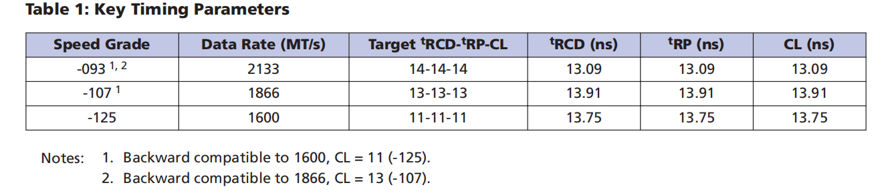
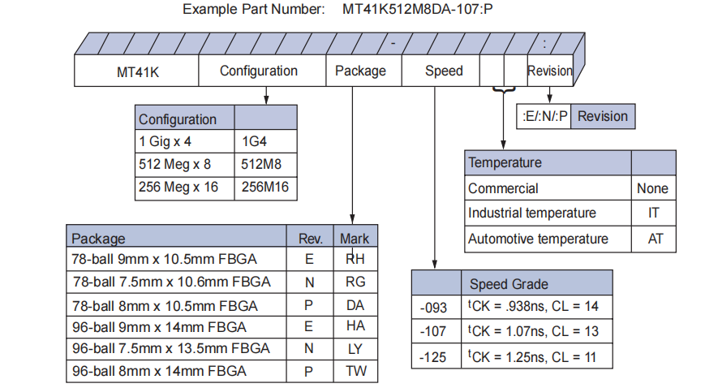
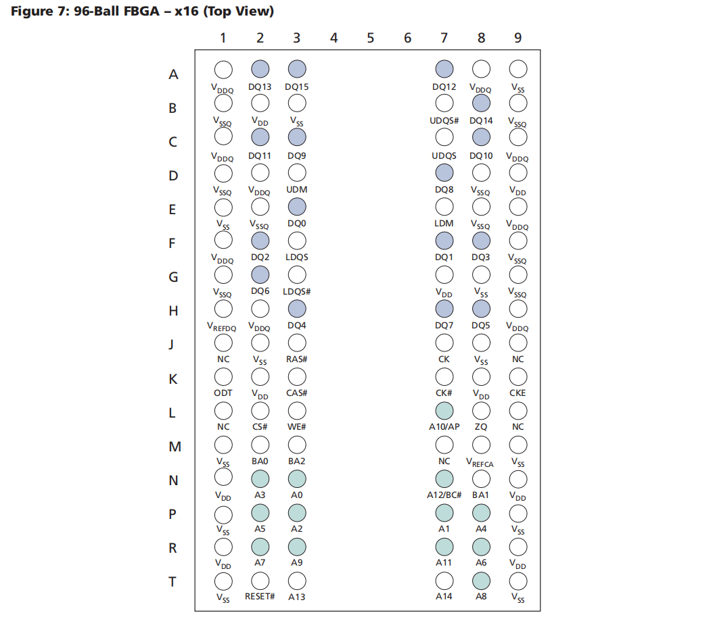
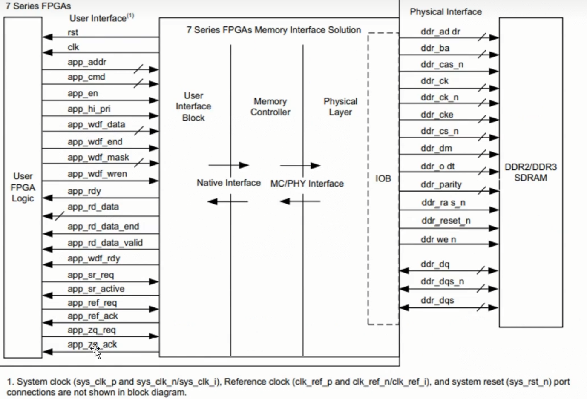
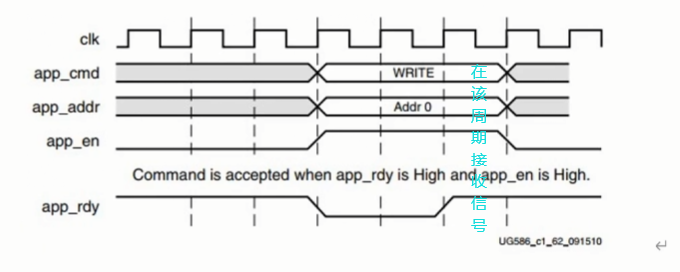
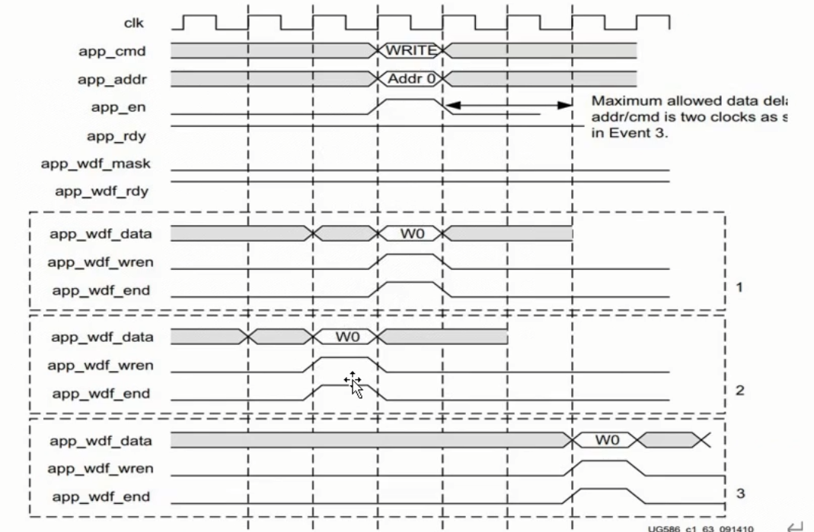
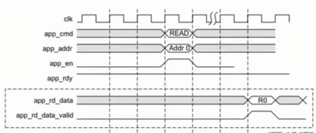
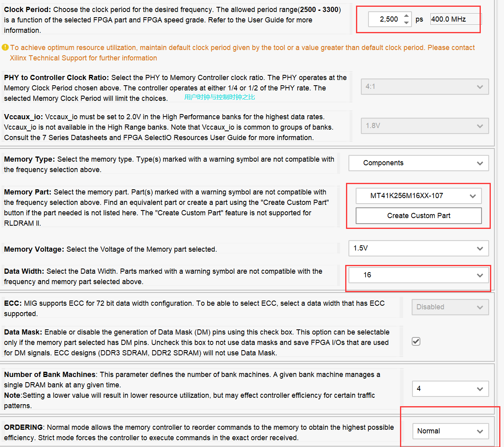
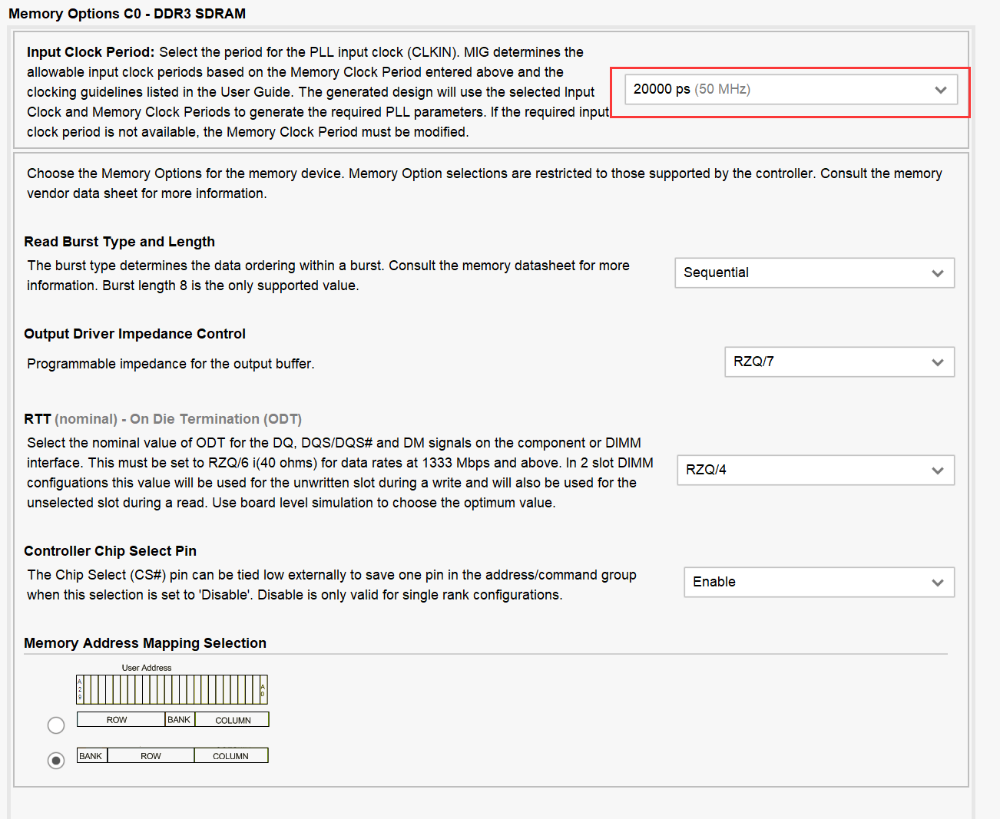

前言
· 使用的开发板为野火升腾系列，$ddr3$为$MT41K256M16-107$型号，$BGA$封装.
特性
①断电不会保存数据，需要周期性刷新
②上升沿和下降沿都会传入数据(双倍性)
★③突发传输($Burst Length$一般为8)
存储方法：（1）$bank$地址（2）行地址（3）列地址，一个最小单元是$16bit/8bit/4bit$
·在这里我们以$MT41K256M16-107$为例

$Speed Grade$：速度等级
$DataRate$：最大时钟频率（$MHz$）
$^{t} RCD$：行寻址至列寻址延迟时间
$^{t} RP$：内存行地址控制器预充电时间
$^{t} RAS$：内存行有效至预充电的最短周期
$CL$：内存读写操作前列地址控制器的潜伏时间
$Target ^{t}RCD-^{t}RP-CL$：工作在最大时钟周期时，所需要等待的最小时钟周期
命名规则

封装图

赛灵思MIG控制器

①命令端口信号
（1）app_cmd(3)：3’b000表示写命令，3’b001表示读命令
（2）app_addr(29)：将要访问的DDR3内存地址
（3）app_rddy(1)：空闲信号，当被设置为”高“时才能响应用户命令
（4）app_en(1)：使能信号，需要拉高

②写数据端口信号
（1）app_wdr_wren(1)：写使能信号，拉高才读取用户数据
（2）app_wdr_rdy(1)：写空闲信号，拉高才能获取用户数据
（3）app_wdr_data(128)：写入$MIG$的$FIFO$的数据，位宽与$IP$核配置有关
（4）app_wdr_end(1)：该信号有效时，表示为突发写数据的最后一个数据
（5）app_wdr_mask(16)：$16bit$数据掩码，每一位对应一个$8bit$数，为$1$时数据无效

③读数据端口信号
（1）app_rd_data(128)：读出的数据，一个时钟周期读出$8$个$16bit$数据
（2）app_rd_data_valid(1)：读出数据是否有效，高电平有效
（3）app_rd_data_end(1)：指示当前数据突发读写的最后一个周期的数据

MIG的IP核的设置


IP核时序
①.sys_clk_i/.sys_clk_i：系统时钟与参考时钟，此处我们接入$PLL$时钟
②.sys_rst：复位信号，此处我们接入$PLL$的$locked$信号，使得$PLL$在未稳定时处于复位状态
③.init_calib_complete：$IP$核初始化成功信号
step1.写命令
· 当app_en/app_rdy同时为高时才表示写入成功
· app_addr地址信号：在此处，app_addr是一个29位宽的东西，由（Rank(高1)+Bank(3)+ROW(15)+Column(低10)）组成；
step2.写数据/读数据(在命令前后都可以)
①写数据：
· 当app_wdf_wren/app_wdf_rdy同时为高时才写入成功
· 写完了要拉一个app_wdf_end
· app_wdf_mask拉低即可
②读数据：
· app_rd_data/app_rd_data_valid
step3.其他的信号
①.app_ref_req(发送刷新请求I口，一般拉低)/.app_ref_ack：刷新请求与刷新响应
②.app_zq_req(发送校准请求I口，一般拉低)/.app_zq_ack：校准请求与校准响应
③.app_sr_req(接低电平)/.app_sr_active
④.device_temp_i：置零
step4.用户时钟与用户复位：
.ui_clk与.ui_clk_sync_rst
· 以上I口的信号均只能拉高一个周期
· 注：写/读数据是128bit,因为用户端的clk是ddr3的四分之一,而且ddr3是上下沿读取，但是总信息量是不变的.